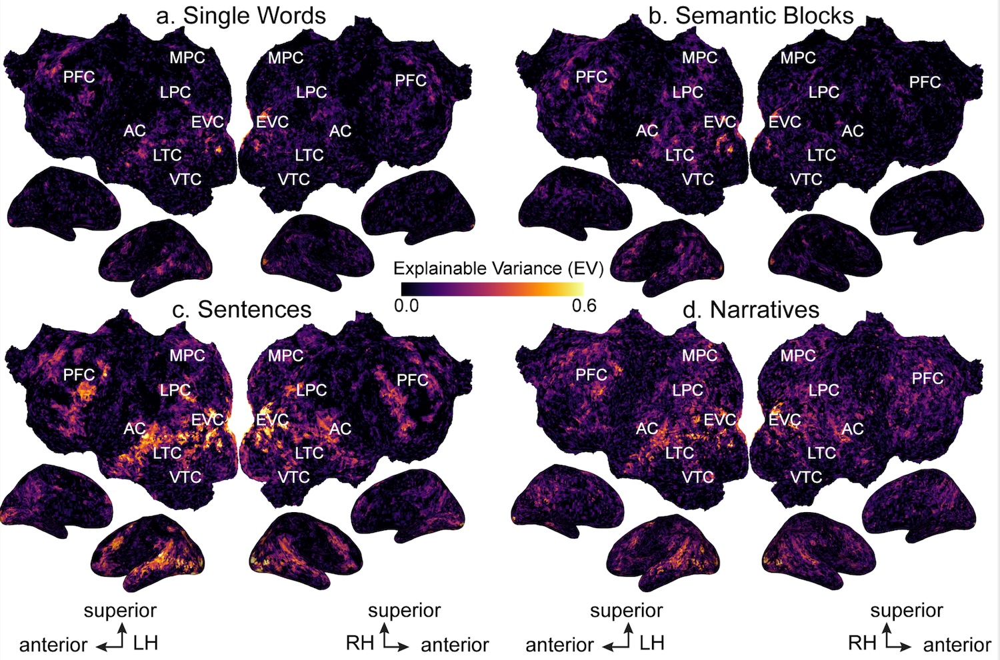
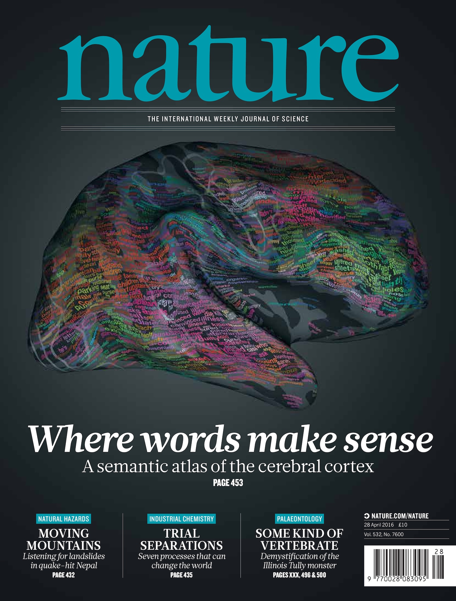
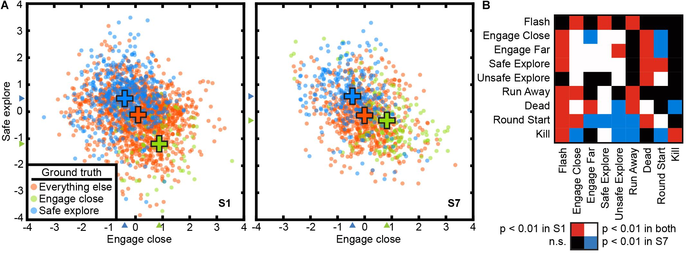

OpenData

This 3T fMRI data set consists of recordings made from participants
who were listening to or reading narrative stories.
These data were collected as part of our 2023 study of context
effects on semantic representation (Deniz et al., 2023).

This 3T fMRI data set consists of recordings made from participants
who were listening to narrative stories, or who were watching a collection
of short video clips. These data were collected as part of our 2016
study on semantic maps (Huth et al., 2016
), and they were used in our 2021 study on semantic
alignment (Popham et al., 2021).

This 3T fMRI data set consists of recordings made from participants
who were playing the Counterstrike video game. These data were collected as
part of our 2021 study of state spaces and attention (Voxel-based state space
modeling recovers task-related cognitive states in naturalistic fmri experiments.
(Zhang et al., 2021)).